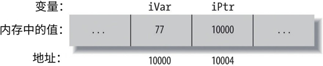

首页 > 编程笔记
C语言指针的声明
指针（pointer）是对数据对象或函数的一种引用。指针有多种用途，例如定义“传址调用”函数，它还可以实现动态数据结构，例如链表和树。
通常，管理大量数据的有效方法不是直接处理数据本身，而是使用指向数据的指针。例如，如果需要对大量的大型记录进行排序，对指向该记录的指针列表进行排序效率要比直接对记录排序高得多，因为这样无需在内存中移动数据。
类似地，如果需要把大型记录传入函数，传递指向该记录的指针会比直接传递记录本身更经济，即使函数不需要修改该记录。
指针代表了一个对象或函数的地址和类型。如果一个对象或函数具有 T 类型，那么指向它的指针就具有一个衍生出的指向 T 的指针类型（pointer to T）。例如，如果 var 是一个 float 变量，那么表达式 &var（其值是该 float 变量的地址）属于指向 float 的指针类型，按照 C 语言表达，就是 float* 类型。
指向任何 T 类型的指针也被简称为 T 指针（T point）。因此，&var 中地址运算符会生成一个 float 指针。
因为 var 没有在内存中移动位置，所以表达式 &var 是一个常量指针。然而，C 也允仵使用指针类型来定义变量。指针变量存储的是另一个对象或函数的地址。我们后面会进一步讨论指向数组和函数的指针。首先，看看如何声明指向非数组对象的指针，语法如下：
在声明中，星号（*）表示“指向的指针”。标识符“名称”被声明为一个对象，其对象类型为“类型”，也就是“指向‘类型’的指针”。类型限定符为可选择项，可能包含 const、volatile 和 restrict 的任意组合。
下面是一个简单的例子：
int 类型是 iPtr 指针所指向的对象的类型。为了让指针能够引用到给定的对象，将该对象的地址赋值给该指针。例如，如果 iVar 是一个 int 变量，那么下面的赋值操作会让 iPtr 指向变量 iVar：
一般形式的声明包含了用逗号分隔开的声明符列表，每个声明符声明了各自的标识符。在指针声明中，星号（*）是声明符的一部分。我们可以在一个声明中同时定义和初始化变量 iVar 和 iPtr，如下所示：
这两个声明中的第二个声明，将 iPtr 初始化为变量 iVar 的地址，这使得 iPtr 指向 iVar。图 1 展示了变量 ivar 和 iPtr 在内存中可能的排列方式。这里的地址为示例所需，纯粹是虚构的。如图 1 所示，存储在指针 iPtr 中的值是对象 iVar 的地址。
在验证与调试时，输出地址常常有助于判断。函数 printf（）提供了一种格式化修饰符：%p。下面语句输出变量 iPtr 的地址和内容：
无论指针所指对象的类型是什么，在内存中指针空间的大小（例如，表达式 sizeof（iPtr））都是一样的。换句话说，char 指针所占用的空间和指向大型结构的指针所占用的空间一样。在 32 位计算机上，指针通常是 4 个字节长。
通常，管理大量数据的有效方法不是直接处理数据本身，而是使用指向数据的指针。例如，如果需要对大量的大型记录进行排序，对指向该记录的指针列表进行排序效率要比直接对记录排序高得多，因为这样无需在内存中移动数据。
类似地，如果需要把大型记录传入函数，传递指向该记录的指针会比直接传递记录本身更经济，即使函数不需要修改该记录。
指针代表了一个对象或函数的地址和类型。如果一个对象或函数具有 T 类型，那么指向它的指针就具有一个衍生出的指向 T 的指针类型（pointer to T）。例如，如果 var 是一个 float 变量，那么表达式 &var（其值是该 float 变量的地址）属于指向 float 的指针类型，按照 C 语言表达，就是 float* 类型。
指向任何 T 类型的指针也被简称为 T 指针（T point）。因此，&var 中地址运算符会生成一个 float 指针。
因为 var 没有在内存中移动位置，所以表达式 &var 是一个常量指针。然而，C 也允仵使用指针类型来定义变量。指针变量存储的是另一个对象或函数的地址。我们后面会进一步讨论指向数组和函数的指针。首先，看看如何声明指向非数组对象的指针，语法如下：
类型 * [类型限定符列表] 名称 [= 初始化器];
在声明中，星号（*）表示“指向的指针”。标识符“名称”被声明为一个对象，其对象类型为“类型”，也就是“指向‘类型’的指针”。类型限定符为可选择项，可能包含 const、volatile 和 restrict 的任意组合。
下面是一个简单的例子：
int *iPtr; // 声明iPtr作为一个指向int的指针
int 类型是 iPtr 指针所指向的对象的类型。为了让指针能够引用到给定的对象，将该对象的地址赋值给该指针。例如，如果 iVar 是一个 int 变量，那么下面的赋值操作会让 iPtr 指向变量 iVar：
iPtr = &iVar; // 使得iPtr指向变量iVar
一般形式的声明包含了用逗号分隔开的声明符列表，每个声明符声明了各自的标识符。在指针声明中，星号（*）是声明符的一部分。我们可以在一个声明中同时定义和初始化变量 iVar 和 iPtr，如下所示：
int iVar = 77, *iPtr = &iVar; // 定义一个int变量，以及一个指向它的指针
这两个声明中的第二个声明，将 iPtr 初始化为变量 iVar 的地址，这使得 iPtr 指向 iVar。图 1 展示了变量 ivar 和 iPtr 在内存中可能的排列方式。这里的地址为示例所需，纯粹是虚构的。如图 1 所示，存储在指针 iPtr 中的值是对象 iVar 的地址。

图 1
图 1
在验证与调试时，输出地址常常有助于判断。函数 printf（）提供了一种格式化修饰符：%p。下面语句输出变量 iPtr 的地址和内容：
printf("Value of iPtr (i.e. the address of iVar): %p\n"
"Address of iPtr: %p\n", iPtr, &iPtr);
无论指针所指对象的类型是什么，在内存中指针空间的大小（例如，表达式 sizeof（iPtr））都是一样的。换句话说，char 指针所占用的空间和指向大型结构的指针所占用的空间一样。在 32 位计算机上，指针通常是 4 个字节长。
关注公众号「站长严长生」，在手机上阅读所有教程，随时随地都能学习。内含一款搜索神器，免费下载全网书籍和视频。

微信扫码关注公众号